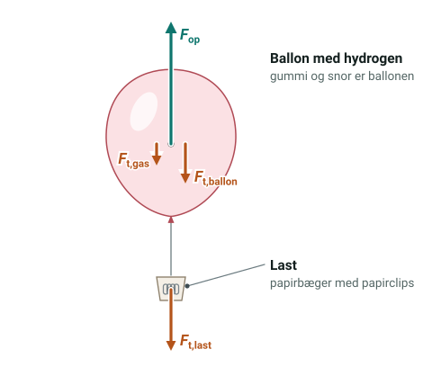

Modul 3 · Fysik › Modulplan › Arbejdsark
Archimedes’ lov og brintballonen
En ballon stiger, fordi luften omkring den skubber den opad. I dag starter I med et forsøg: Hvor meget kan en ballon fyldt med hydrogen bære? Bagefter regner I det ud med Archimedes’ lov og idealgasligningen, og I ser på, om helium er lige så godt som hydrogen.
Teori: Archimedes’ lov
En ballon i luft påvirkes af en kraft opad, opdriften Fop. Den kommer af, at lufttrykket er lidt større under ballonen end over den. Archimedes’ lov: Opdriften er lige så stor som tyngden af den luft, ballonen skubber væk, den fortrængte luft: Fop = mluft · g, hvor g = 9,82 N/kg.
Hvorfor? Tænk på en ballonformet klump af selve luften. Den svæver i ro, så kræfterne på den ophæver hinanden: Opdriften på klumpen er lige så stor som klumpens tyngde. Sættes en ballon i klumpens sted, får den den samme opdrift.
Teori: Newtons 1. lov
Er summen af kræfterne på en genstand 0, står den stille eller bevæger sig med konstant fart. En ballon, der svæver stille, har altså Fsamlet = 0.
1Introforsøget: Hvor meget kan ballonen bære?
Hvor mange gram tror I, ballonen kan bære? Skriv jeres gæt, før I går i gang.

Bind ballonen til et papirbæger. Læg papirclips i bægeret én ad gangen, til ballonen lige akkurat svæver. Vej bægeret med papirclips. Mål ballonens omkreds om den bredeste del, og vej til sidst en tom ballon med snor af samme slags.
| Bæger med papirclips i g | Tom ballon og snor i g | Omkreds O i cm |
|---|---|---|
Ballonen svæver. Hvad siger Newtons 1. lov om kræfterne på ballonen?
Bægeret med papirclips er ballonens lasteevne: den største last, den kan bære. Hvor tæt var jeres gæt?
2Densiteten af en gas
Densiteten ρ fortæller, hvor meget en bestemt mængde af et stof vejer: ρ = mV. I SI-enheder måles den i kg/m3, som er det samme som g/L.
Stofmængden kan skrives n = mM, hvor M er molarmassen. Sæt det ind i idealgasligningen, og isolér mV. Så har I en formel for densiteten af en gas.
Hjælp
Gang med M på begge sider, og del med R, med T og med V.
Beregn densiteten af luft, hydrogen og helium ved 20 °C og 1,013 · 105 Pa. Brug R = 8,314 J/(mol · K) og molarmasserne i kg/mol: M(luft) = 0,02896, M(H₂) = 0,00202 og M(He) = 0,00400.
3Kræfterne på ballonen

Figuren viser kræfterne på ballonen, når den svæver med den største last, den kan bære. Opdriften peger opad. Tyngden af gassen, tyngden af ballonen (gummi og snor) og tyngden af lasten peger nedad.
Brug Newtons 1. lov: Summen af kræfterne er 0. Regn kræfter opad som positive, og skriv ligningen.
Hjælp
Opdriften tæller med plus, de tre tyngder med minus.
Opdriften er tyngden af den fortrængte luft, og hver tyngde er en masse gange g. Skriv ligningen med masser.
Hjælp
Fop = mluft · g og Ft,gas = mgas · g og så videre.
Del med g på begge sider, og isolér mlast. Så har I formlen for ballonens lasteevne, mmax last.
Luften og gassen har samme volumen V som ballonen. Skriv mluft og mgas med densiteterne, og sæt ind.
Hjælp
m = ρ · V
4Passer det med jeres ballon?
Beregn ballonens radius og volumen i m3 ud fra omkredsen. Regn, som om ballonen er en kugle: O = 2 · π · r og V = 43 · π · r3.
Beregn lasteevnen med jeres formel. mballon er den tomme ballon med snor.
Sammenlign med introforsøget og jeres gæt. Hvorfor passer det ikke helt?
5Hydrogen eller helium?
Festballoner og luftskibe fyldes i dag med helium. Beregn lasteevnen af jeres ballon, hvis den var fyldt med helium.
Hvorfor løfter helium næsten lige så meget som hydrogen, selvom molarmassen er dobbelt så stor? Og hvorfor bruger man helium?